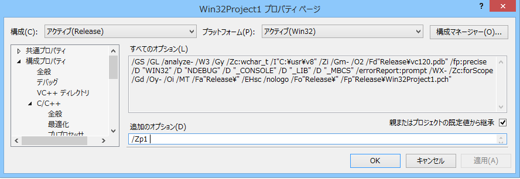

(ここに記載されている情報は、v8エンジン3.28.57 2014/08/05版でのものとなる)
JavaScript v8 エンジン は、Googleが開発したオープンソースのJavaScriptエンジンであり、
2014年現在も非常に注目されている汎用的で高速なJavaScriptエンジンである。
以下の記述には、C++の入門～基本程度のプログラミング知識が必要である。
そうでない場合、ほとんど意味不明であろう。
当サイト管理人としては、ScenarioModに元々搭載されているLuaを使うことを強くお勧めする。
「本体プログラム文字コード、データ文字コード、拡張プログラム文字コード、周辺ツール文字コード」の全てがcp932(≒shift-jis)」の天翔記においては、
ScenarioModに組み込まれているLua (cp932対応)の方が、はるかに取り扱いが簡潔・簡単・便利である。
ここでは、何らかの理由により、
「少々苦難な道をたどったとしてもJavaScript v8を使いたい」
といった場合にその参考となることだろう。
JavaScript v8 エンジンの「VisualStudio2013」以降でのコンパイル方法自体は、各種サイトに掲載されている。
v8エンジンそのもののコンパイルに必須な注意点としては、
python 2.7系」にパスが通っており、「python」というコマンドでpython2.7系が実行可能となっていること。
よって、python3系と2.7系両方いれており、python3系をパスにおいて優先させている場合は問題が発生する。
all.slnは、そのままコンパイルは出来ず、少しだけオプションの変更が必要である。
まず、根本的にSceanrioModへと取り込むならば、全てのプロジェクトファイルには、/Zp1オプションを付ける必要性がある。
このオプションは『構造体は元々の型サイズに従って完全正確にパッキングを行う』ために必須である。
このオプションが存在しない[=ソースファイルが存在しない]プロジェクトは、/Zp1を付けるような項目自体存在しないのでパスして良い
次に「ワーニングをエラーにする」というオプションが付いているのに、Googleが提供しているソースでは、
いくつかの軽度のワーニングが出るので、コンパイルが出来ない。
そこで、「ワーニングはエラーにしない」に変更する必要がある。
「JavaScript v8 の」ソースコード全体がコンパイルできるようであれば、
以下の変更を行うことで、 windowsのコンソールや、天翔記のModDebuggerと相性を良くすることが可能である。
//-----------------------------------------------------------------------------
#include "include/cp932_outputdebug_printf.h"
static void VPrintHelper(FILE* stream, const char* format, va_list args) {
if ( TRUE /*(stream == stdout || stream == stderr) && !HasConsole()*/ ) {
// It is important to use safe print here in order to avoid
// overflowing the buffer. We might truncate the output, but this
// does not crash.
char buffer[4096];
OS::VSNPrintF(buffer, sizeof(buffer), format, args);
cp932::OutputDebugPrintf(buffer);
} else {
vfprintf(stream, format, args);
}
}
//-----------------------------------------------------------------------------
//-----------------------------------------------------------------------------
#pragma once
#include <stdarg.h>
#include <tchar.h>
#include <vector>
#include <windows.h>
inline std::wstring to_WideChar(UINT uCodePage, const std::string &text)
{
int size = MultiByteToWideChar(uCodePage, 0, text.c_str(), -1, NULL, 0);
std::vector<wchar_t> buf(size);
size = MultiByteToWideChar(uCodePage, 0, text.c_str(), -1, &buf[0], buf.size());
return std::wstring(buf.begin(), buf.begin() + size);
}
inline std::string to_MultiByte(UINT uCodePage, const std::wstring &text)
{
int size = WideCharToMultiByte(uCodePage, 0, text.c_str(), -1, NULL, 0, 0, NULL);
std::vector<char> buf(size);
size = WideCharToMultiByte(uCodePage, 0, text.c_str(), -1, &buf[0], buf.size(), 0, NULL);
return std::string(buf.begin(), buf.begin() + size);
}
// cp932→utf8へ
inline std::string cp932_to_utf8(const std::string &text)
{
return to_MultiByte(CP_UTF8, to_WideChar(CP_OEMCP, text));
}
// utf8→cp932へ
inline std::string utf8_to_cp932(const std::string &text)
{
return to_MultiByte(CP_OEMCP, to_WideChar(CP_UTF8, text));
}
namespace cp932 {
// OutputDebugStringとprintf両方出力。cp932への変換を伴う。
inline void OutputDebugPrintf(const char *format, ...) {
char szBufDebug[4096] = "";
int length = sizeof(szBufDebug);
va_list arg;
va_start(arg, format);
_vsnprintf_s(szBufDebug, length, _TRUNCATE, format, arg);
va_end(arg);
szBufDebug[length - 1] = '\0'; // 番兵
std::string sjis = utf8_to_cp932(szBufDebug); // cp932へ
::OutputDebugStringA(sjis.c_str());
printf(sjis.c_str());
}
}
//-----------------------------------------------------------------------------
普通の「文字コードcp932ベース(≒sjis)の」コンソールコマンドに、このv8エンジンを組み込めれば、
ScenarioModに組み込むのは容易である。
以下のようなコンソールコマンドを作ってみよう。 この「プロジェクト」も「Zp1」オプションを忘れてはならない。

ライブラリのリンクはv8コンパイル時に生成されたライブラリ(.lib)を一通りくっつけることとなるであろう。
//-----------------------------------------------------------------------------
/*
* v8 組み込み サンプルプログラム.
*/
#include <stdio.h>
#include <stdlib.h>
#include <string.h>
#include <windows.h>
#include "include/v8.h"
#include "include/cp932_outputdebug_printf.h"
#pragma comment(lib, "winmm.lib")
using namespace v8;
namespace v8 {
// Throwメソッド
static Handle<Value> Throw(Isolate* isolate, const char* message) {
return isolate->ThrowException(String::NewFromUtf8(isolate, message));
}
// String型が評価できればそのまま返して、評価できない時はフリーズ防止のため、変換できない旨の文字列返す。
const char* ToCString(const v8::String::Utf8Value& value) {
return *value ? *value : "<string conversion failed>";
}
// エラー表示処理。エラーが起きた行と桁の位置に「^」を打つ
void JS_ReportException(v8::Isolate* isolate, v8::TryCatch* try_catch) {
v8::HandleScope handle_scope(isolate);
v8::String::Utf8Value exception(try_catch->Exception());
const char* exception_string = ToCString(exception);
v8::Handle<v8::Message> message = try_catch->Message();
if (message.IsEmpty()) {
// V8 didn't provide any extra information about this error; just
// print the exception.
cp932::OutputDebugPrintf("%s\n", exception_string);
}
else {
// Print (filename):(line number): (message).
v8::String::Utf8Value filename(message->GetScriptOrigin().ResourceName());
const char* filename_string = ToCString(filename);
int linenum = message->GetLineNumber();
cp932::OutputDebugPrintf("%s:%i: %s\n", filename_string, linenum, exception_string);
// Print line of source code.
v8::String::Utf8Value sourceline(message->GetSourceLine());
const char* sourceline_string = ToCString(sourceline);
cp932::OutputDebugPrintf("%s\n", sourceline_string);
// Print wavy underline (GetUnderline is deprecated).
int start = message->GetStartColumn();
for (int i = 0; i < start; i++) {
cp932::OutputDebugPrintf(" ");
}
int end = message->GetEndColumn();
for (int i = start; i < end; i++) {
cp932::OutputDebugPrintf("^");
}
cp932::OutputDebugPrintf("\n");
v8::String::Utf8Value stack_trace(try_catch->StackTrace());
if (stack_trace.length() > 0) {
const char* stack_trace_string = ToCString(stack_trace);
cp932::OutputDebugPrintf("%s\n", stack_trace_string);
}
}
}
// 必要みたい。メモリ確保用のラッパー。
class ShellArrayBufferAllocator : public ArrayBuffer::Allocator
{
public:
virtual void* Allocate(size_t length)
{
void *data = AllocateUninitialized(length);
return data == NULL ? data : memset(data, 0, length);
}
virtual void* AllocateUninitialized(size_t length)
{
return malloc(length);
}
virtual void Free(void* data, size_t)
{
free(data);
}
};
// version関数の内容。バージョン番号を返す
void JS_Version(const v8::FunctionCallbackInfo<v8::Value>& args) {
args.GetReturnValue().Set(
String::NewFromUtf8(args.GetIsolate(), V8::GetVersion()));
}
// print関数の内容。
void JS_Print(const FunctionCallbackInfo<Value> &args)
{
HandleScope handle_scope(args.GetIsolate());
for (int i = 0; i < args.Length(); i++)
{
String::Utf8Value str(args[i]);
cp932::OutputDebugPrintf(*str);
}
cp932::OutputDebugPrintf("\n");
args.GetReturnValue().Set(0);
}
// FOpenのラッパー
static FILE* FOpen(const char* path, const char* mode) {
FILE* result;
if (fopen_s(&result, path, mode) == 0) {
return result;
}
else {
return NULL;
}
}
// 文字列読み取り
static char* ReadChars(Isolate* isolate, const char* name, int* size_out) {
FILE* file = FOpen(name, "rb");
if (file == NULL) return NULL;
fseek(file, 0, SEEK_END);
int size = ftell(file);
rewind(file);
char* chars = new char[size + 1];
chars[size] = '\0';
for (int i = 0; i < size;) {
int read = static_cast<int>(fread(&chars[i], 1, size - i, file));
i += read;
}
fclose(file);
*size_out = size;
return chars;
}
// １つのファイルをv8用の文字列として得る
Handle<String> JS_ReadFile(Isolate* isolate, const char* name) {
int size = 0;
char* chars = ReadChars(isolate, name, &size);
if (chars == NULL) return Handle<String>();
Handle<String> result =
String::NewFromUtf8(isolate, chars, String::kNormalString, size);
delete[] chars;
return result;
}
// read関数の定義
void JS_Read(const v8::FunctionCallbackInfo<v8::Value>& args) {
String::Utf8Value file(args[0]);
if (*file == NULL) {
Throw(args.GetIsolate(), "Error loading file");
return;
}
Handle<String> source = JS_ReadFile(args.GetIsolate(), *file);
if (source.IsEmpty()) {
Throw(args.GetIsolate(), "Error loading file");
return;
}
args.GetReturnValue().Set(source);
}
// load関数の定義 load = read + 実行
void JS_Load(const v8::FunctionCallbackInfo<v8::Value>& args) {
String::Utf8Value file(args[0]);
if (*file == NULL) {
Throw(args.GetIsolate(), "Error loading file");
return;
}
Handle<String> source = JS_ReadFile(args.GetIsolate(), *file);
if (source.IsEmpty()) {
Throw(args.GetIsolate(), "Error loading file");
return;
}
// 元のファイル名をスクリプトのオリジナル情報として取っておいて(エラーの際にファイル名とか出すため)
Handle<String> filename = String::NewFromUtf8(args.GetIsolate(), *file);
ScriptOrigin origin(filename);
TryCatch try_catch;
Handle<Script> script = Script::Compile(source, &origin); // ファイル情報渡しつつコンパイル
if (script.IsEmpty()) {
JS_ReportException(args.GetIsolate(), &try_catch);
return;
}
Handle<Value> result = script->Run();
if (result.IsEmpty()) {
JS_ReportException(args.GetIsolate(), &try_catch);
return;
}
args.GetReturnValue().Set(result);
}
// 各C++関数をjavascript関数として登録
Handle<Context> InitBuildinFunction(Isolate *isolate)
{
Handle<ObjectTemplate> global_template = ObjectTemplate::New(isolate);
global_template->Set(String::NewFromUtf8(isolate, "print"), FunctionTemplate::New(isolate, JS_Print));
global_template->Set(String::NewFromUtf8(isolate, "version"), FunctionTemplate::New(isolate, JS_Version));
global_template->Set(String::NewFromUtf8(isolate, "read"), FunctionTemplate::New(isolate, JS_Read));
global_template->Set(String::NewFromUtf8(isolate, "load"), FunctionTemplate::New(isolate, JS_Load));
return Context::New(isolate, NULL, global_template);
}
}
namespace utf8 {
// 文字列の実行。utf8文字列に変換済みのものを渡すこと
void Do_Command(Isolate *isolate, char *szCommand, int *exception = NULL) {
Handle<String> source = String::NewFromUtf8(isolate, szCommand);
TryCatch try_catch;
Handle<Script> script = Script::Compile(source);
if (script.IsEmpty()) {
JS_ReportException(isolate, &try_catch);
if ( exception ) { *exception = true; };
return;
}
Handle<Value> result = script->Run();
if (result.IsEmpty()) {
JS_ReportException(isolate, &try_catch);
if ( exception ) { *exception = true; };
return;
}
}
// ファイルの実行。utf8文字列に変換済みのものを渡すこと
void Do_File(Isolate *isolate, char *szFileName, int *exception = NULL) {
std::string command = std::string("load('") + szFileName + "')";
Handle<String> source = String::NewFromUtf8(isolate, command.c_str());
TryCatch try_catch;
Handle<Script> script = Script::Compile(source);
if (script.IsEmpty()) {
JS_ReportException(isolate, &try_catch);
if ( exception ) { *exception = true; };
return;
}
Handle<Value> result = script->Run();
if (result.IsEmpty()) {
JS_ReportException(isolate, &try_catch);
if ( exception ) { *exception = true; };
return;
}
}
// グローバル変数のdoubleでの取得。変数名には、utf8文字列に変換済みのものを渡すこと。
double GetGlobalNumber(Isolate *isolate, char *szVarName, int *exception = NULL) {
Handle<Object> global = isolate->GetCurrentContext()->Global();
Handle<Value> var = global->Get(String::NewFromUtf8(isolate, szVarName));
if (*var) {
return var->NumberValue();
}
else {
if ( exception ) { *exception = true; };
return -1;
}
}
// グローバル変数のstringでの取得。変数名には、utf8文字列に変換済みのものを渡すこと。
std::string GetGlobalString(Isolate *isolate, char *szVarName, int *exception = NULL) {
Handle<Object> global = isolate->GetCurrentContext()->Global();
Handle<Value> var = global->Get(String::NewFromUtf8(isolate, szVarName));
String::Utf8Value utf8(var);
if (*utf8) {
return *utf8;
}
else {
if ( exception ) { *exception = true; };
return "";
}
}
}
namespace cp932 {
// 文字列の実行。cp932で渡すこと。
void Do_Command(Isolate *isolate, char *szCommand, int *exception = NULL) {
std::string utf8_szCommand = cp932_to_utf8(szCommand);
utf8::Do_Command(isolate, (char *)utf8_szCommand.c_str(), exception);
}
// ファイルの実行。cp932で渡すこと。
void Do_File(Isolate *isolate, char *szFileName, int *exception = NULL) {
std::string utf8_szFileName = cp932_to_utf8(szFileName);
utf8::Do_File(isolate, (char *)utf8_szFileName.c_str(), exception);
}
// グローバル変数のdoubleでの取得。変数名には、cp932で渡すこと。
double GetGlobalNumber(Isolate *isolate, char *szVarName, int *exception = NULL) {
std::string utf8_szVarName = cp932_to_utf8(szVarName);
return utf8::GetGlobalNumber(isolate, (char *)utf8_szVarName.c_str(), exception);
}
// グローバル変数のstringでの取得。変数名には、cp932で渡すこと。
std::string GetGlobalString(Isolate *isolate, char *szVarName, int *exception = NULL) {
std::string utf8_szVarName = cp932_to_utf8(szVarName);
std::string utf8_result = utf8::GetGlobalString(isolate, (char *)utf8_szVarName.c_str(), exception);
std::string cp932_result = utf8_to_cp932(utf8_result);
return cp932_result;
}
}
// このtestに相当する部分が、ScenarioModで記述するであろう部分。
void test(Isolate *isolate ) {
char *command = "var いい = 'ああ'; print(p);";
cp932::Do_Command(isolate, command);
cp932::Do_File(isolate, "ccc.js");
std::string s = cp932::GetGlobalString(isolate, "いい");
printf("%s", s.c_str());
}
int main(int argc, char **argv)
{
V8::InitializeICU();
V8::SetFlagsFromCommandLine(&argc, argv, true);
ShellArrayBufferAllocator array_buffer_allocator;
V8::SetArrayBufferAllocator(&array_buffer_allocator);
Isolate *isolate = Isolate::New();
Isolate::Scope isolate_scope(isolate);
HandleScope handle_scope(isolate);
Handle<Context> context = v8::InitBuildinFunction(isolate);
Context::Scope context_scope(context);
// テスト
test(isolate);
V8::Dispose();
return 0;
}
//-----------------------------------------------------------------------------
//-----------------------------------------------------------------------------
print("ああ");
var うう = 3;
var いい = "おお";
JavaScript V8 におけるECMAScript6の機能はほとんど未完成であるが、
allow functionについては概ね動作するようである。
v8\src\flag-definitions.h:
DEFINE_BOOL(harmony_arrow_functions, true, "enable harmony arrow functions")
他のECMAScript6(harmony)機能はほぼ動作しない。
この状態で、v8エンジンを再コンパイルし、「v8 組み込み サンプルプログラム」も再コンパイルした場合、以下のようなfunction記述が可能となる。
//----------------------------------------------------------------------------- var hmfunc = x => x * x * 3 print(hmfunc(3)) // 27という結果